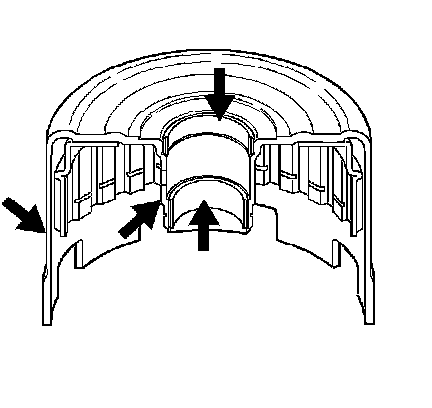
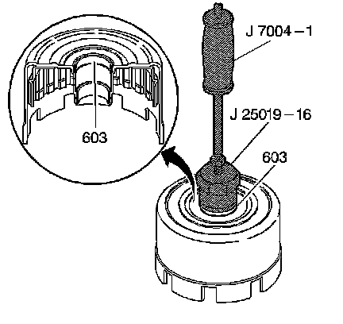
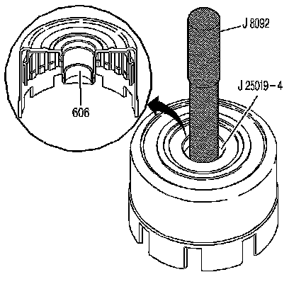
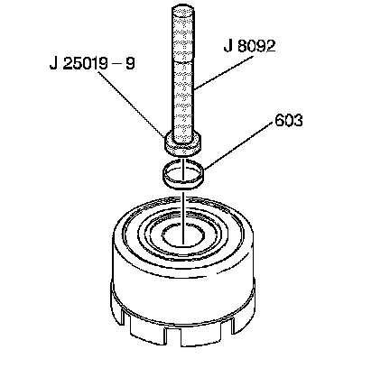
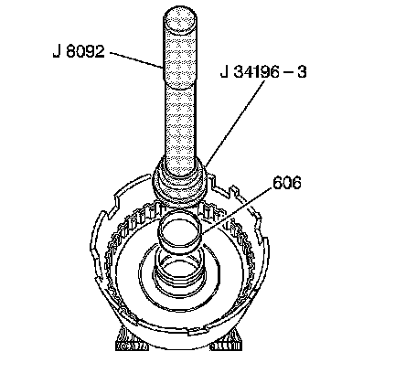

Reverse Input Clutch Bushing Replacement
Reverse Input Clutch Bushing Replacement
Removal Procedure
Tools Required
^ J 25019 Bushing Service Set
^ J 34196-B Transmission Bushing Service Set
^ J 7004-A Universal Remover
^ J 8092 Universal Driver Handle - 3/4 in - 10

1. Inspect the reverse input clutch housing and drum assembly for the following conditions:
^ Damaged or worn bushings
^ Surface finish on the hub and outer housing - check band surface for flatness
^ Leak at the weld
^ Heat distortion
^ Rolled or distorted retaining ring groove

2. Using the J 25019-16 with the J 7004-A, remove the reverse input clutch front bushing (603).

3. Using the J 25019-4 with the J 8092, remove the reverse input clutch rear bushing (606).
Installation Procedure

1. Using the J 25019-9 with the J 8092, install a reverse input clutch front bushing (603).

2. Using the J 34196-3 which is part of kit J 34196-B with the J 8092, install a reverse input clutch rear bushing (606).